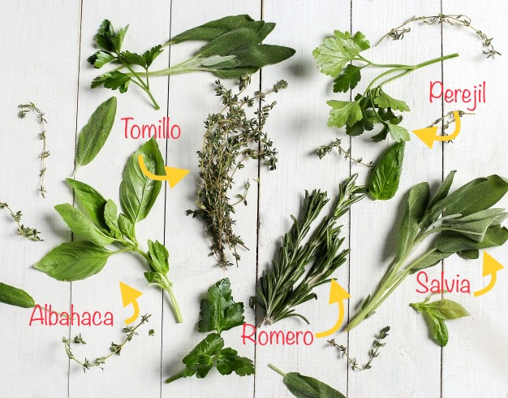
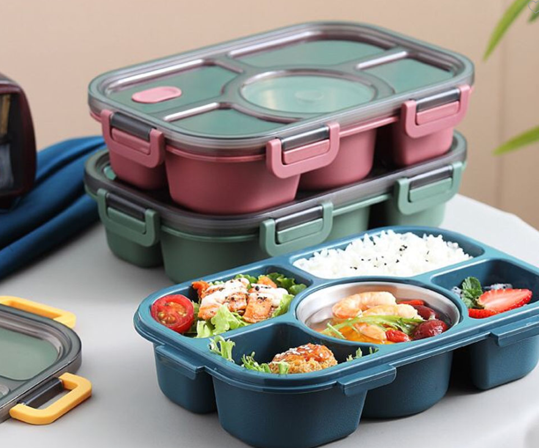

Quitar el olor de ajo de las manos
El ajo es un ingrediente maravilloso, pero su olor puede quedarse en tus manos por horas. Descubre cómo eliminarlo de manera sencilla y rápida.
Conservar hiervas aromáticas siempre frescas
Las hierbas frescas son esenciales para darle un toque especial a tus platos, pero pueden perder su frescura rápidamente. Aquí te compartimos un truco para mantenerlas vivas por más tiempo.


Corte en juliana
Cortar en juliana es una técnica básica que puede elevar tus platillos. Aprende el paso a paso para lograr cortes uniformes y perfectos, ideal para ensaladas, salsas y más.
Quitar el olor a los tupper de plástico
Los tupper pueden acumular olores después de almacenar comida. Descubre cómo devolverles su frescura y hacer que huelan como nuevos.
